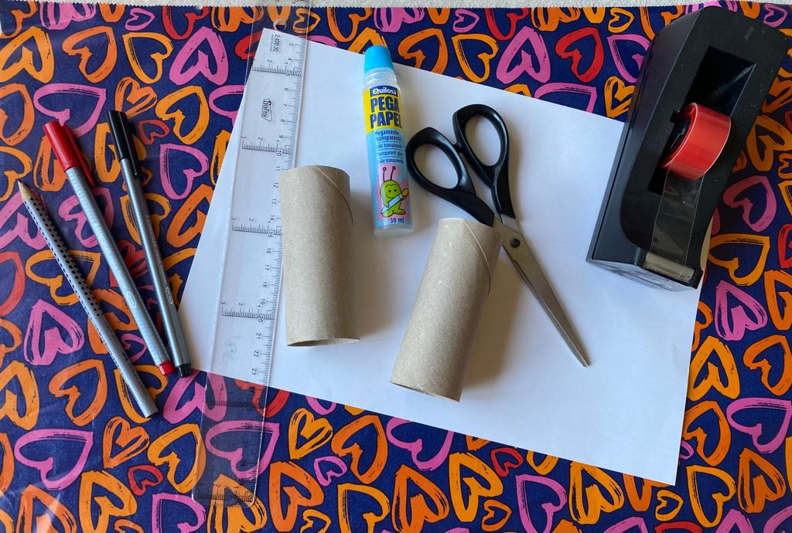
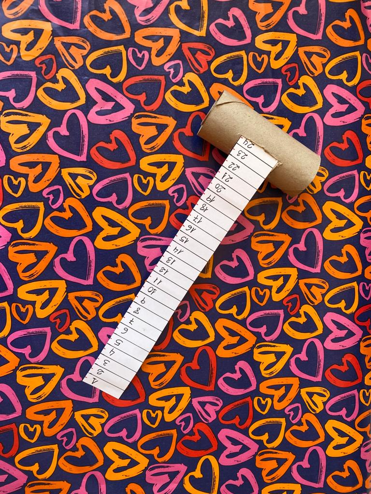
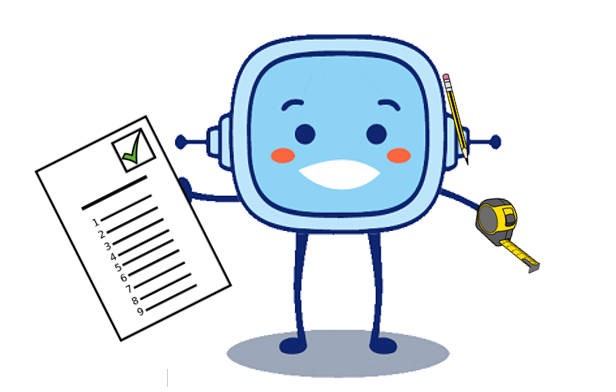
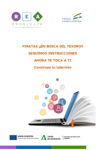
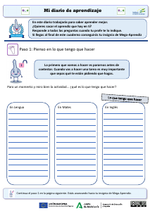
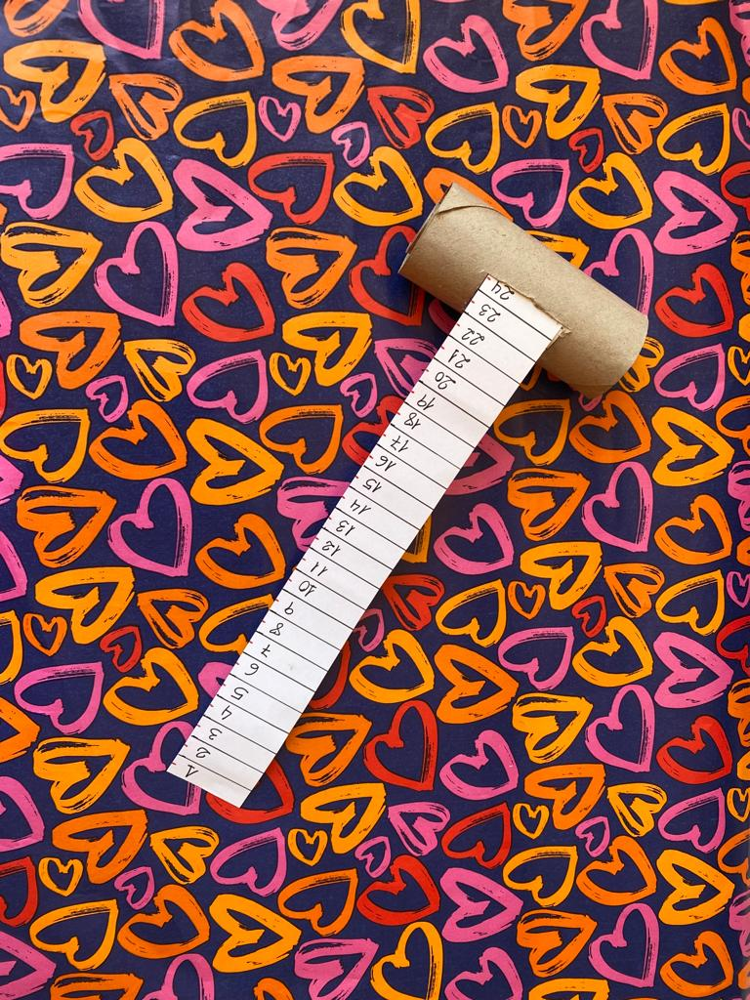
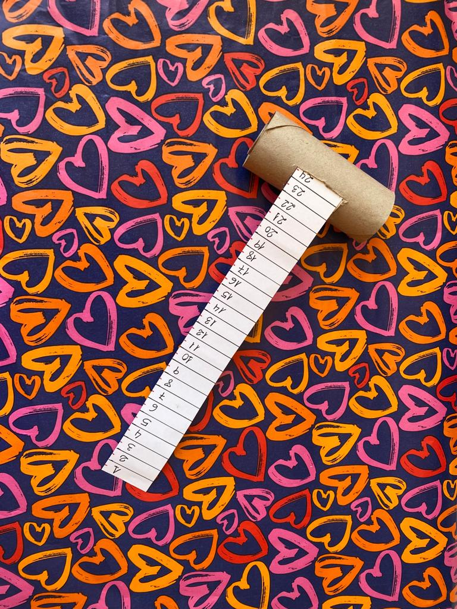

Retransmitir la noticia de un terremoto es un desafío.
Rétor es un manitas y un aventurero. Está dispuesto a realizar cualquier desafío.
Pero, a veces, necesita seguir unas instrucciones para no equivocarse.
¿Te atreves a ser tan valiente como Rétor?
Definición: Reto o situación difícil. Ejemplo: Retransmitir la noticia de un terremoto es un desafío.
Lectura facilitada
Rétor es un manitas.
Rétor es un aventurero.
Rétor realiza cualquier desafío.
Rétor para no equivocarse
sigue instrucciones.
¿Te atreves?
¿Quieres ser valiente como Rétor?
1. ¡¡Construyo mi RETORMETRO!!
Las instrucciones nos ayudan a realizar tareas siguiendo unos pasos, es muy importante leerlas bien y realizar los pasos en orden. ¡¡Mira lo bien que las utiliza Rétor!!
Rétor ha decidido fabricar su propia cinta métrica enrollable, podéis seguir sus instrucciones y elaborar una para cada equipo.
Vais a necesitar los siguientes elementos:

1º.- Dibujar y recortar
Dibujar el metro en la cartulina blanca con ayuda de la regla y marcar los centímetros, tenéis que tener mucho cuidado de no mover la regla mientras lo haces. Recorta cada tira dibujada. Puedes marcar en rojo cada línea del medio centímetro.
2º.- Pega
Ahora pegad las tiras, con cuidado para que coincidan los centímetros, numeradlos y lo pegáis a uno de los rollos.
3º.- Construye
Cortad el rollo y pegadlo para hacedlo mas fino.
Enrollad el metro y metedlo en el otro rollo, pero antes hacedle una ventanita por donde pueda salir el metro.

4º.- Decora
Ahora a decorar como más os guste.
Lectura facilitada
Las instrucciones ayudan
a realizar tareas
siguiendo unos pasos.
Tenemos que leer bien las instrucciones.
Tenemos que realizar los pasos en orden.
Rétor utiliza muy bien las instrucciones.
Rétor decide fabricar su propia cinta métrica enrollable.
Podéis seguir sus instrucciones
y elaborar una cinta métrica para cada equipo.
Necesitaréis los siguientes elementos:
1 lápiz.
2 rotuladores.
1 regla.
2 rollos de papel higiénico.
1 pegamento de barra.
Tijeras escolares.
Cinta adhesiva.
1 cartulina blanca.
1º.- Dibujar y recortar
Dibujar el metro en la cartulina blanca.
Dibujar con ayuda de la regla.
Marcar los centímetros.
No mover la regla mientras lo haces.
Recorta cada tira dibujada.
Marcar en rojo cada línea del medio centímetro.
2º.- Pega
Pegad las tiras con cuidado.
Pegar las tiras para que los centímetros coincidan.
Numerad los centímetros.
Pegad a uno de los rollos.
3º.- Construye
Cortad el rollo.
Pegad el rollo más fino.
Enrollad el metro.
Meted el metro en el otro rollo.
Hacedle al rollo una ventanita.
La ventanita sirve para que salga el metro.
4º.- Decora
Decorar la cinta métrica a vuestro gusto.
2. Ahora te toca a ti
Es muy importante seguid las instrucciones en orden para todo, por ejemplo para construir algo, para los juegos, para realizar los problemas, para hacer una receta, ...
Rétor con sus instrucciones en la mano nos ha preparado estas actividades. No olvides tu Retormetro o una cinta métrica, seguro que lo necesitas.
Elige las que quieras hacer.
Lectura facilitada
Las instrucciones son muy importantes.
Seguid el orden de las instrucciones para:
Construir algo,
Jugar a juegos,
Realizar los problemas,
Hacer una receta, ...
Rétor con sus instrucciones nos ha preparado actividades.
No olvides coger tu Retormetro o una cinta métrica.
Seguro que necesitas el Retormetro o la cinta métrica.
Elige las que quieras hacer.
Opción A: ¿Instrucciones correctas?
Piensa en las siguientes instrucciones para moverte por tu colegio y elige si son verdaderas o falsas.
Retroalimentación
Falso
Retroalimentación
Falso
Retroalimentación
Verdadero
Retroalimentación
Falso
Retroalimentación
Verdadero
Retroalimentación
Falso
Opción B: Una buena sopa ... de letras
Instrucciones:
Las palabras pueden estar en horizontal, vertical o en diagonal, pero no siempre en sentido de la lectura.
Elige una palabra y empieza a buscarla por la inicial.
Cuando la encuentres, arrastra el ratón desde la letra inicial hasta la última letra de la palabra.
No intentes buscar sin lógica, a ver lo que encuentras.
Las palabras encontradas cambiarán de color cundo las encuentras.
Opción C: ¿Cuál es el camino?
Puedes descargar la ficha y rellenarla. Acuérdate de guardarla cuando acabes. También puedes imprimirla y rellenarla en papel.
En la siguiente
ficha debes dar las instrucciones para ir desde tu clase hasta algún lugar del colegio y después hacer un dibujo del recorrido.
Opción D: Construye tu laberinto
Puedes descargar la ficha y rellenarla. Acuérdate de guardarla cuando acabes. También puedes imprimirla y rellenarla en papel.
En la siguiente
ficha encontrarás un ejemplo y una cuadrícula para que construyas tu laberinto. ¡Cuidado nadie puede descubrir la ruta secreta hasta que esté acabado!
Motus dice: ¿Te ayudo?
Primero dibuja el camino correcto con lápiz flojito para después poderlo borrar y después rellena el resto de la cuadrícula, teniendo cuidado de que no haya otra salida.
3. Realizamos laberintos
En grupos de 4 vamos a dibujar laberintos con tiza en el patio.
Cada grupo intentará resolver el de otro grupo, del siguiente modo:
Un miembro del grupo será el peón y llevará los ojos tapados.
Un compañero le dirá: "derecha o izquierda".
Otros dos compañeros medirán las distancias con un metro para indicarle cuánto tiene que caminar.
El peón debe estimar la distancia en metros por sus pasos. (Se puede dar una ayudita).
Después cambiaremos los roles en otro laberinto, para que todo el grupo pase por todos los papeles.
4. Reviso lo que aprendo
Puedes descargar la ficha y rellenarla. Acuérdate de guardarla cuando acabes. También puedes imprimirla y rellenarla en papel.
Reflexiona un momento sobre todo lo que has aprendido hasta llegar aquí. Y completa el PASO 3 de tu
Diario de aprendizaje (revisa lo aprendido).
Recuerda:
Pregunta a tu profesor o profesora si la rellenas en papel o en el ordenador.
Si la rellenas en el ordenador, ¡no te olvides de guardarla en tu ordenador cuando termines!


 


 En grupos de 4 vamos a dibujar laberintos con tiza en el patio.
En grupos de 4 vamos a dibujar laberintos con tiza en el patio.